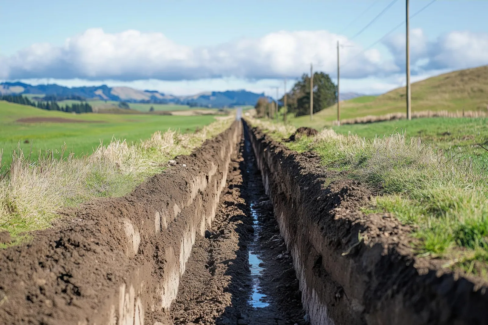

Equipment Range For Tight Access And Volume
Mini excavator for trenching and tight-access work on Manilla properties. Skid steer for earthmoving and finish grading. Both owned outright.

Hoosier Dirt & Gravel handles excavation for residential and rural properties around Manilla and Rush County, just east of Shelby, with light commercial work welcome case by case. The mini excavator gets into tight spots a 40,000-pound machine can't, and the skid steer handles the volume work out in grain country.
Excavation jobs around Manilla and Rush County come in all sizes, whether it's a tight residential spot or open farm ground. We bring a mini excavator for precision and a skid steer for volume earthmoving and finish grading — right-sized for the job and owned outright.
Mini excavator for trenching and tight-access work on Manilla properties. Skid steer for earthmoving and finish grading. Both owned outright.
Excavation, prep, and grade work for new home builds, garages, pole barns, and other outbuildings across Rush County.
Water lines, electrical, drainage runs, and culvert connections sized for residential and rural property throughout the Manilla area.
Residential excavation, farm property work, and small commercial jobs in Rush County that need a contractor sized for the project.
Excavation looks simple from the outside. The real work is about access, soil, utilities, and getting the job done without tearing up everything around the work zone — whether that's a tight residential lot in Manilla or a rural property out in Rush County.
Walk the site to evaluate access, soil conditions, and existing utilities
Coordinate Indiana 811 utility marking before any equipment moves
Execute the work with the right machine for the conditions, then restore the site
Excavation mistakes don't always show up right away. Out around Manilla they surface later — cracked slabs, settled trenches, damaged utilities, and ground torn up well outside the work zone.


Indiana 811 must mark buried utilities before any excavation begins on your Manilla property. We coordinate the call and schedule around the markings.
Wet ground, frozen soil, or steep access in Rush County may push scheduling for safety and quality reasons. We work with the conditions rather than against them.
Most residential excavation in the Manilla area runs 1–3 days. Foundation prep and larger projects can take 4–7 days depending on scope and site conditions.
Quick answers to the questions we hear most often from property owners planning excavation work in Manilla.
Trenching for utilities and drainage lines, foundation prep, earthmoving, debris removal, and tight-access work across Rush County. Residential and rural property, plus smaller jobs that the larger regional outfits tend to pass on.
Most residential excavation in the Manilla area runs one to three days. Foundation prep and larger projects can take four to seven days depending on scope and site conditions.
Yes. Indiana 811 marks buried utilities before any equipment moves on your Manilla property. We coordinate the call and schedule the work around the markings so nothing underground gets hit.
That's where the mini excavator earns its keep. It gets into spots a 40,000-pound machine can't operate in, and the skid steer handles the volume work. The right machine for the access you've got.
We handle trenching for water, drainage, and service lines across Rush County. Tell us what the project involves on the call and we'll let you know straight whether it's a fit.
Get a free on-site excavation estimate around Manilla and Rush County. Trenching, foundation prep, earthmoving, or general excavation work. We'll walk the site and write a clear quote before any equipment moves.